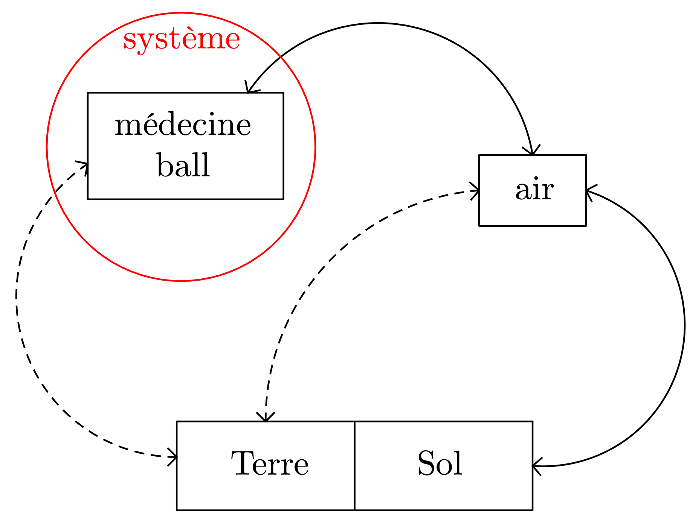
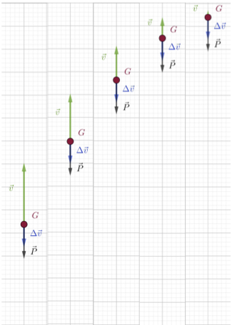
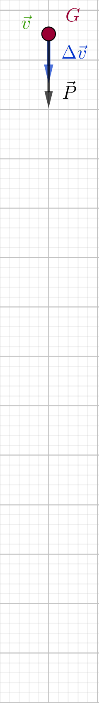
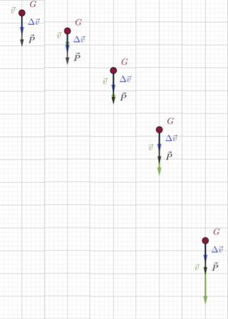
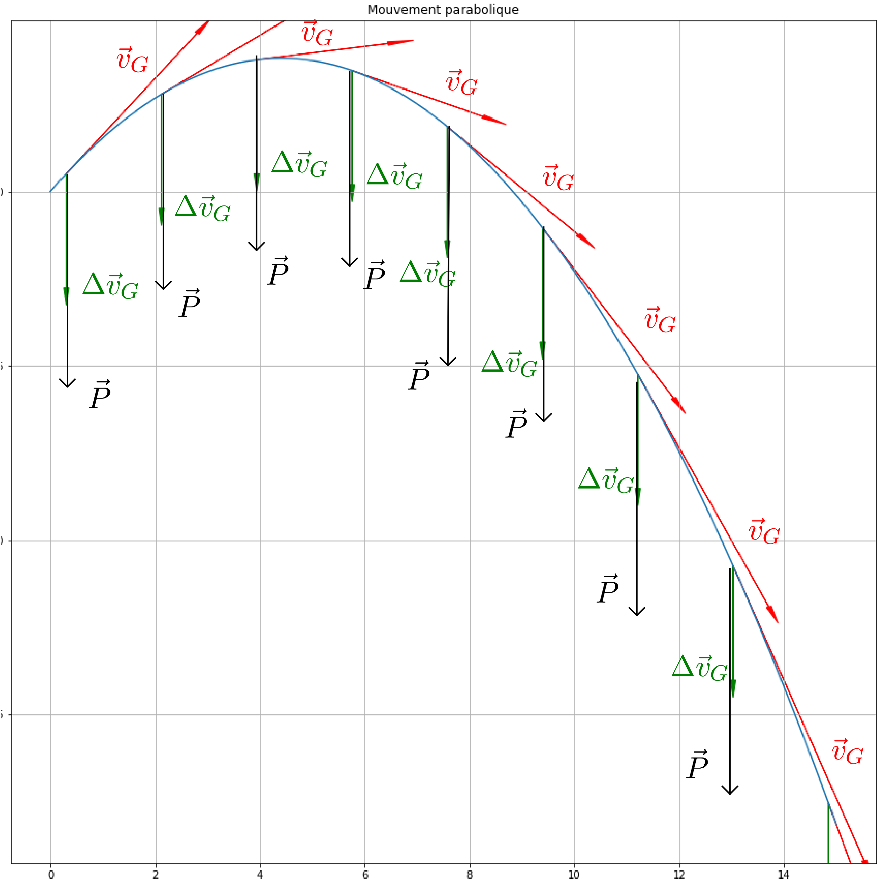

Dans les documents précédents nous avons précisé la notion de vitesse et nous sommes intéressés au vecteur « variation de vitesse ». Pourquoi avoir introduit ce vecteur ? Et pourquoi ne pas introduire le vecteur « variation de variation de vitesse » ? Ce document a pour objectif de vous faire réaliser l’importance du vecteur « variation de vitesse ».
Lancer et réception d’un médecine – ball
On lance, à la verticale, un médecine – ball et on le rattrape.
- On appelle système l’objet ou l’ensemble d’objets dont on étudie le mouvement. Préciser le système étudié dans cette activité ?
Solution
Système = {médecine – ball}
- Après avoir rappelé ce qu’est un référentiel, préciser par rapport à quel référentiel on étudie le mouvement. Quelles grandeurs dépendent du choix du référentiel ?
Solution
Un référentiel est un objet (réel ou virtuel) par rapport auquel on décrit le mouvement du système.
S’il est possible de décrire le mouvement d’un système par rapport à n’importe quel référentiel, on choisit généralement le référentiel dans lequel ce mouvement est le plus simple.
Ici on choisira donc le référentiel terrestre (c’est à dire tout objet immobile par rapport à la terre).
Toutes les grandeurs cinématiques dépendent du référentiel, par exemple la position au cours du temps, la vitesse, etc.
Un seul et même mouvement se présente différemment dans différents référentiels.
- Repérer et noter le (ou les) moment(s) où on exerce une action sur le médecine – ball. Préciser à chaque fois dans quelles direction et sens s’exerce cette action.
Ces actions font-elles partie du mouvement que l’on étudie ? Faut-il les faire apparaître dans le diagramme objets – interactions ? Comment les prend-on en compte lors de l’étude du système ?
Solution
Le médecine – ball est mis en mouvement grâce à l’action de la main sur lui. De même son mouvement cesse à cause d’une nouvelle action de la main. On ne peut cependant pas faire apparaître ces actions dans le diagramme objets – interactions car les objets et les interactions doivent être présents tout au long du mouvement (ce qui n’est pas le cas de la main ici).
Il existe en fait trois phases : une phase initiale qui fait intervenir (entre autres la main), une deuxième phase (celle du mouvement qui nous intéresse) et une phase terminale qui à nouveau fait intervenir (entre autres ici aussi) la main.
La première phase ayant une influence très importante sur la seconde, on prend en compte ses effets en utilisant des conditions initiales : la position du début de la deuxième phase est celle de la fin de la première phase, la vitesse du début de la deuxième phase est celle de la fin de la première, etc.
- Établir le diagramme objets – interactions et en déduire quelles sont les interactions qu’il faut modéliser.
Solution
Le système interagit :
- avec la Terre : on modélise l’action de la Terre sur tout système proche de sa surface par une force appelée poids du système $\vec{P}$ dont les caractéristiques sont : {direction : droite verticale, sens : vers la Terre, valeur : $P=m\,g$}.
- avec l’air : le mouvement du médecine – ball étant assez bref dans le temps, nous considérerons que cette interaction n’agit pas significativement sur ce mouvement et nous la négligerons.
- Repérer différentes phases lors du mouvement du système et les décrire (on se contente d’étudier le mouvement du centre d’inertie). Pour chacune de ces phases, préciser la direction, le sens et l’évolution du vecteur « variation de vitesse » du système.
Solution
Phase d’ascension 
Sommet de la trajectoire 
Phase de descente 
L’animation correspondante se trouve à cette adresse : https://www.geogebra.org/m/wqnzqkw8
- Étudie-t-on le mouvement complet lorsqu’on se contente de suivre le centre d’inertie d’un système ?
Solution
Lorsqu’on se contente de seulement étudier le mouvement du centre d’inertie d’un système on ne décrit pas toujours le mouvement de ce système dans son ensemble : par exemple on ne décrit pas le mouvement du bâton d’une majorette. Les informations recueillies restent cependant intéressantes et doivent juste être complétées, ce qui ne sera pas fait au lycée.
- Que peut-on conclure à partir de l’étude précédente ?
Solution
Il n’existe pas de lien direct entre la vitesse est la force à laquelle est soumis le système. Il existe par contre un lien direct entre la force $\vec{P}$ et le vecteur « variation de vitesse » $\Delta \vec{v}$ : ils ont même direction, même sens et varient de la même façon ($\vec{P}$ est constant, $\Delta \vec{v}$ l’est aussi). $\Delta \vec{v}$ et $\vec{P}$ sont colinéaires.
Première approche des lois de la mécanique (lois de Newton)
Toute la « mécanique classique »1 repose sur trois lois publiées par Newton en 1687. Ces lois sont des généralisations de faits expérimentaux. Elles forment un tout : toute vérification expérimentale doit porter sur l’ensemble.
(Histoire des sciences) Les lois de la mécanique selon Newton
Newton a précédé l’énoncé des trois lois par celui de 8 définition dont seules trois sont nécessaires à la compréhension des lois2.
- Définition 1.
- La quantité de matière (masse) en est la mesure définie comme une quantité proportionnelle à la densité et au volume de la matière.
- Définition 2.
- La force innée de la matière est son aptitude inhérente à la résistance grâce à laquelle tout corps isolé, abandonné à lui-même, garde son état de repos ou de mouvement rectiligne uniforme.
- Définition 3.
- L’application d’une force est une action à laquelle on soumet un corps pour modifier son état de repos ou de mouvement rectiligne uniforme.
- Théorème 1.
- Tout corps garde son état de repos ou de mouvement rectiligne uniforme, tant qu’il n’est pas astreint à modifier cet état par application de forces.
- Théorème 2.
- La variation de la vitesse est proportionnelle à la force motrice appliquée ; sa direction est celle de la droite suivant laquelle s’exerce la force appliquée au corps.
- Théorème 3.
- À toute action correspond toujours une réaction qui lui est égale et opposée ou, ce qui revient au même, les interactions de deux corps sont toujours égales et opposées.
« Aristote et ses disciples considéraient la force comme cause du mouvement, mais estimaient que dès que cesse l’action de la force, cesse le mouvement. Autrement dit, la force est nécessaire pour maintenir le mouvement. La découverte de la première loi de Newton signifiait que cette conception était erronée puisque aucune « force » n’est nécessaire pour maintenir un mouvement uniforme. La force fut dès lors considérée comme la cause déterminant une variation de la vitesse d’un corps. »
Sivoukhine, Cours de Physique, Édition Mir.
Première et troisième lois de Newton
Première loi : principe de l’inertie
La première loi de Newton n’est autre que le principe d’inertie : « Dans un référentiel galiléen, le centre d’inertie d’un système isolé ou pseudo-isolé possède un mouvement rectiligne uniforme ou est immobile. Réciproquement, dans un référentiel galiléen, si le mouvement du centre d’inertie d’un système est rectiligne uniforme (ou nul), le système est isolé ou pseudo-isolé. »
On peut le résumer mathématiquement par l’équivalence : $$\sum \vec{F}^{\text{ext}} = \vec{0} \Leftrightarrow \vec{v}_G = \overrightarrow{\text{cste}}$$
En première approximation, on peut considérer le référentiel héliocentrique comme étant galiléen.
-
Un système est dit (mécaniquement) isolé lorsqu’aucune force ne s’exerce sur lui ;
-
Un système est dit pseudo-isolé lorsque toutes les forces qui s’exercent sur lui se compensent à chaque instant.
Troisième loi : principe des actions réciproques
$A$ et $B$ étant deux corps en interaction, la force $\vec{F}_{A / B}$ modélisation de l’action exercée par $A$ sur $B$ et la force $\vec{F}_{B / A}$ modélisation de l’action exercée par $B$ sur $A$ ont même direction, même valeur et des sens opposés : $$\vec{F}_{A / B} = - \vec{F}_{B / A}$$ Ce principe reste vrai quel que soit le type de référentiel.
Deuxième loi de Newton dans le cas des forces constantes
Deuxième loi de Newton dans le cas des forces constantes
Dans un référentiel galiléen, si le système est soumis à un ensemble de forces constantes, le vecteur « variation de vitesse » du système entre deux dates et le vecteur résultante des forces qui s’appliquent sur ce système sont colinéaires et de même sens : $$\Delta \vec{v}_G = k \sum \vec{F}^{\text{ext}}$$
- Remarque.
- Dans le cas où les forces qui s’appliquent sur le système ne sont pas constantes, la deuxième loi telle qu’énoncée ci-dessus n’est qu’une forme approchée entre deux dates proches de celle qui est mathématiquement correcte (et qui sera introduite l’année prochaine).
De quoi dépend le coefficient de colinéarité de la deuxième loi de Newton ?
Expérimentalement, si les forces sont constantes, on constate que :
-
plus la masse du système est grande, moins l’action d’un ensemble de forces donné fait varier le vecteur vitesse ;
-
plus longtemps l’ensemble de forces agit sur le système, plus la variation du vecteur vitesse est grande.
Finalement, $$\Delta \vec{v}_G = \dfrac{\Delta t}{m}\, \sum \vec{F}^{\text{ext}} \Leftrightarrow m \dfrac{\Delta \vec{v}_G}{\Delta t} = \sum \vec{F}^{\text{ext}}$$
Exemple du mouvement parabolique d’une balle
Étude du mouvement parabolique d’une balle
Ressource en ligneCorrigé
-
À la fin du 19ème siècle, on s’est rendu compte que les lois de la « mécanique classique » ne décrivaient pas correctement le mouvement des systèmes se déplaçant aux très grandes vitesses. Elles ont alors été modifiées par Einstein pour devenir les lois de la « relativité restreinte » puis, un peu plus tard, de la « relativité générale ». Ces lois restent cependant valables pour la description du mouvement des objets se déplaçant à des vitesses très petites devant celle de la lumière ou dans le cas où on n’a pas besoin d’une très grande précision (ce qui par exemple n’est pas le cas des GPS par exemple). ↩︎
-
J’ai simplifié la deuxième loi en remplaçant « quantité de mouvement » par « variation du vecteur vitesse ». ↩︎